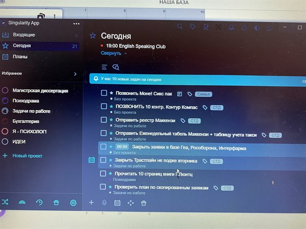
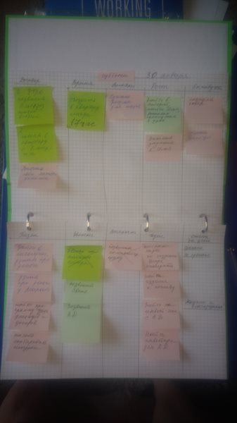

У меня нет сомнений, что этот марафон комфортнее и успешнее всего работает с задачей
6 Фев. 21:34
Ответить
0
+
−
ElenaBraun
Нельзя ответить на свое же сообщение, чтобы не плодить новых веток, жаль, ведь процесс осмысления идет и новые мысли появляются. по поводу вопроса ниже из серии "как быть", что решила применить по отношению к себе: - не ставить сроки на задачах, максимум указывать в формулировке срок желаемого исполнения -
даже если фокус только на одной большой задаче, в которой все действия
понятны - декомпозируем, записываем в список, прочекиваем выполнение -
разрешить себе не выполнять задачи в первично намеченные сроки (принять
данность о конечности своих ресурсов и что впихнуть невпихуемое нельзя)
Резюмируя интервал времени между первым комментарием и вторым: большую
и срочную задачку выполнила, но прокрастинации было хоть отбавляй, даже
сингулярити в это время освоила и перенесла в него треть списка задач)
4 Фев. 06:07
Ответить
0
+
−
vachkazhec
Про "баннерную слепоту" прямо в точку)
3 Фев. 17:11
Ответить
0
+
−
ElenaBraun
Вопрос из серии "как быть": налаживаешь
процесс, расписываешь задачки в список планируешь и тут "БАЦ" - срочная
задача от руководства под девизом "и пусть весь мир подождет"..
бросаешь все и вся и берешься именно за эту задачу. Задача по
трудоемкости - 3-4 дня, монолитная. Писать ее целиком в список - смысл..
прописывать шаги выполнения - я их изначально определила и по ним иду,
получается все практики, список и тд заброшены. Понимание этого факта
добавляет определенной нервозности неимоверно, потому как остальные
задачи продалбываются ( за которые спросят не руководители, так с укором
посмотрит команда) .. получается, что скатываешься обратно по наклонной
в бездну будущего хаоса, остается только принять это и вылезать
обратно..
2 Фев. 07:35
Ответить
−1
+
−
Radmir09
ElenaBraun,
Полностью согласен. Когда работая в офисе, с постоянным потоком срочных
и важных задач, тяжеловато что-то систематизировать и вести список
задач. Мне тоже интересен ответ на этот вопрос))
3 Фев. 06:10
1 ответ
VegaV
Это
лучший марафон по повышению продуктивности, что я проходила. До меня
дошло, как формулировать себе задачу по написанию книги. Не надо
планировать начать или дописать главу, надо ставить себе задачу в
количестве знаков! Написала 5000, молодец! Ну, и формулирование других
задач упростилось. И да, переписывание не выполненной задачи усложняло
её выполнение, факт. Буду менять формулировки!
2 Фев. 06:51
Ответить
0
+
−
Baurzhan
Классная информация. Показывает как можно делать проще. Рад участию в этом марафоне.
2 Фев. 06:16
Ответить
0
+
−
amerkel
Информация
о "баннерной слепоте" меня поразила! Это действительно так, чем дольше я
переношу одну и ту же задачу на следующий день, тем больше шанс, что я
её вообще никогда не сделаю..
1 Фев. 21:47
Ответить
+2
+
−
Dasha77
😍
1 Фев. 11:36

Ответить
+2
+
−
Dasha77
Почти все внедрила) пробую сингулярку ) нра)
1 Фев. 11:35
Ответить
+2
+
−
Drumanoid
Привет! Пока получается так: Идеи и Проекты в майндмэпах, Обезьяньи задачи - в Trello.
31 Янв. 22:41
Ответить
0
+
−
Alex_83
первый
спринт отлично зашел. посмотрим, что во втором. больше всего мне
понравилась идея выделять категорию идей. теперь проектов у меня на 60%
меньше, чем было. а это уже попахивает выполнением хотя бы приличного их
куска :)
31 Янв. 21:02
Ответить
0
+
−
ReshetnikovAnton
Спасибо
всем причастным за материалы первого спринта! Чувствую, что для лучшего
результата мне стоит раз в неделю перечитывать все тексты, но даже без
этого я чувствую, что прогресс есть, хотя мне и тяжело. Ретро -- must
have, надеюсь, после других спринтов тоже будут ретро для погружения в
себя и лучшего понимания, что удаётся, а что нет и что мешает.
31 Янв. 18:32
Ответить
0
+
−
getinfocusme
очень
полезная штука ретро) может быть кого-то удивлю, но ретроспектива есть
абсолютно везде, где используется в правильном смысле термин "система".
Техническая
или организационная или другая система имеет т.н. признаки системы и
обратная связь (отрицательная) есть везде)
Ретроспектива или ретро это и есть
обратная связь в конце каждого спринта в скраме. Анализ любого плана
(дневного, недельного, ежемесячного, ежегодного) это и есть ретро.
Примитивно ретро это сравнение плана с фактом и разбор,
почему произошло рассогласование и что нужно сделать, чтобы
компенсировать это рассогласования... кстати, ракета имеет 2 контура
обратной связи - по времени и координате..
Многие
слышали про японское инструменты качества, так вот они построены на
группе инструментов (приемов и тд) где в основе цикл Деминга PDCA. так
вот последний элемент A - и есть анализ и пересмотр планов, разбор и
улучшения))) короче - обратная связь есть
везде)))) и без нее нихрена не работает.
Организм человека весь построен на обратной связи))))
Для мужика жена - самая лучшая
обратная связь)))))))))
Отредактирован
30 Янв. 17:04
Ответить
+2
+
−
Akman
Первый спринт мне понравился. Это реальные практики для жизни! Хочу дальше, мастер.
30 Янв. 12:50
Ответить
0
+
−
Lysigera
30 Янв. 11:49

Ответить
+2
+
−
Lysigera
Для
меня очень все полезно, сложился пазл. Не смогла загрузить Сингулятор,
может и к лучшему, просто усовершенствовала бумажный вариант. Это
инструмент работы Обезьянки. Сейчас он у меня выглядит вот так. Есть еще
цели и проекты в целях в таблице Excel. Это уже для Разумной личности.
30 Янв. 11:47
Ответить
0
+
−
valeriykh
в
этом материале очень полезна информация о постоянной работе с
просроченными задачами! ведь действительно, как только ты перенес
выполнение задачи пару раз, дальше ты ее переносишь на автомате ))).
сегодня взял и переоформил все просрочки и сразу захотелось их делать!!!
главное не писать простыми словами сложные задачи, а просто их разбить
на этапы.
29 Янв. 11:02
Ответить
+3
+
−
Stri
Марафон
огонь) пушка и мана небесная))))) спасибо вам за простоту и задания на
10 минут в день))))) Теперь осталось делать каждый день (очень грустный
смайлик), хотя делать то тоже 10 минут в день хотя бы уделять с утра
списку задач и начать с задач из списка делать. Если задача первая в
списке то она должна быть сделана сразу и быстро)))) Если задача должна
быть сделана сразу и быстро она должна быть первой или второй в списке
задач)))) спасибо подробнее читай Марафон_)
Отредактирован
29 Янв. 05:31
Ответить
+2
+
−
Allerborn_Ivan
Очень полезная инфа. Теперь я понял почему некоторые задачи висят 3+ дней. Марафон бомба!
28 Янв. 19:09
Ответить
+2
+
−
Tomasu
Пока
писал ответы то получил инсайт сам от себя. Мне не хочется выполнять
задачи, которые не конкретизированы по времени. Приведу пример - сейчас
прохожу курс который состоит из большого количества уроков, которые
строго ограничены по времени (видеоуроки). Соответственно я знаю, что на
очередной урок у меня уйдет 25 минут. Всё отлично - учусь. Но, если в
уроке есть самостоятельное задание, которое по времени не ограничено,
только я знаю сколько времени у меня на него уйдет и то после того как
сделаю. Такой урок я уже смотрю через “не хочу”, а самостоятельную
работу постоянно откладываю. В планировщиках стоят даты к задачам. Это
даты когда задача начнет делаться. Но вот конца этой задачи нет. И
возникает ощущение, что она займет собой все оставшееся время. И этот
факт заставляет откладывать ее на потом. Сейчас буду думать, что с этим
делать. Есть мысли?
Отредактирован
26 Янв. 04:11
Ответить
+6
+
−
Комментарий удален
Еще 7 ответов
Lenoran
У
меня волею сложных жизненных обстоятельств накопился весьма длинный
список задач (около 150, не считая идей и проектов. Там еще столько же).
Все это было разбито по двум десяткам категорий типа семья, финансы,
одна работа, вторая работа и т.п. Очень жалко было рушить эту систему
закидывая все задачи в папки на неделе и позже. (папка сегодня в
тиктике, где я веду задачи итак есть). Но попробуем пожить в упрощенной
системе. Возможно, она окажется эффективней.
Отредактирован
26 Янв. 03:58
Ответить
+2
+
−
moralex2k
Lenoran, У меня аналогичная ситуация. Тоже упрощаю. Успехов!
29 Янв. 11:07
Еще 1 ответ
ElenaS89
Эта практика помогла мне выполнить гораздо больше дел из списка, чем за всю предыдущую неделю
25 Янв. 17:25
Ответить
+3
+
−
ElenaS89
Столкнулась
с падением мотивации. Кажется, что я столько всего переделала. (на
самом деле нет) Хочется отдохнуть и взять недельку выходных, а потом с
понедельника начать)
Отредактирован
25 Янв. 10:18
Ответить
0
+
−
AntonV
Сегодня нету вопрос, чтобы оставить ответы в комментариях.
По
этому порекомендую видео к просмотру, часть людей его уже видела, часть
нет (судя по комментарием с вопросами про коробочки или обзор дня).
Нужно
понимать, что действия которые показывает Максим в нем, подходит для
любого приложения Todoist, Ticktick, Microsoft To Do. Я его использовал
как инструкцию, смотрел и повторял шаг за шагом за Максимом. Плюс там он
рассказывает про весь пройденный материал.
В видео у него
коробочки, это Сегодня, папка Когда-нибудь (вторая коробочка), и третья
коробочка - это папки проектов, и папка Нераспределенные (для задач без
конкретного проекта). Так же в видео рассматривает Обзор дня.
Отредактирован
25 Янв. 03:19
Ответить
+4
+
−
Sergoser
Огромное
спасибо, сейчас только режим восстановить надо, а то просыпаться
вечером не очень удобно и круто, ничего не хочется, ещё планировщик
нужен хороший, трелло не подходить, может кто подскажет, буду
признателен)))
25 Янв. 00:22
Ответить
0
+
−
AntonV
Sergoser, Из бесплатных - Todoist, Ticktick, Microsoft To Do, из платных - Сингулярити (его я и использую). Рекомендую отличное видео по работе в Сингулярити от Дорофеева - https://www.youtube.com/watch?v=h7OpQlIBud4
Круто
то, что Максим показывает в видео работу в Сингулярити по всем
материалам, что мы прошли, а выбирать можно любой, тут главное логику и
структуру использовать из видео. Я использовал видео, как инструкцию,
просто шаг за шагом, за ним повторял.
Отредактирован
25 Янв. 03:02
Еще 1 ответ
SeegioEx
Спасибо
огромное за курс!) Главная проблема сейчас, найти удобный способ
расставлять задачи на день, неделю и тд, и чтобы они всегда были на виду
Отредактирован
24 Янв. 23:18
Ответить
+1
+
−
Inna28
Очень
рада возможности ещё более детально рассортировать задачи! Иногда
чувствую, что они накапливаются в голове, вести списки - отличное
решение, которое буду практиковать! :)
24 Янв. 20:49
Ответить
0
+
−
Ampaya
а можно ли в приложении To Do сделать три коробки? Или есть другое простое но с такими функциями приложении?
24 Янв. 13:48
Ответить
+2
+
−
AntonV
Ampaya,
Да, можно создать три коробки, точнее да же использовать уже те папки,
что есть в приложение. Сегодня использовать как первую коробку. Создать
Неделя папку, это вторая коробка. И третья коробка, будет хранится в
папках проектов, и можно создать еще одну папку Нераспределенные или
Другие, это для тех задач, которые без конкретного проекта.
25 Янв. 03:09
Еще 1 ответ
ValeriyGrom
Когнитивный
диссонанс! С одной стороны мозгу для эффективности нужно видеть не
больше одной задачи иначе эффективность сильно падает. При пяти задачах в
списке - эффективность падает кратно. У меня в списке на день стоит
десять и более задач! Что делать?!
Цитата:
"коробочку с делами на сегодня необходимо пересматривать раз в час".
Я правильно прочитала, что КАЖДЫЙ ЧАС нужно отвлекаться от текущей
задачи и переключаться на проверку списка на сегодня? Зачем так часто? А
если ты в потоке?
Отредактирован
22 Янв. 21:44
Ответить
0
+
−
aptypr
Tatiana_Proz,
если задача для обезьянки, то после завершения задачи как раз получится
где то через час. поток тоже на самом деле опасная вещь, судя по всему в
него попадешь, когда задача понятная, не важно важная она или срочная.
23 Янв. 19:34
1 ответ
Amazzzonka
А
мне вот как-то не хватило примеров... Например, планирование дня - то
ли я невнимательно читала предыдущие занятия, но именно по планированию
дня не нашла информации. Например, у меня каждый день есть повторяющиеся
задачи (на которые нужно время - физуха, медитация, чтение) и есть
какие-то, которые нужно сделать единоразово. Как правильно набрать пул
единоразовых задач? И как стоит определять, что из них делать сегодня?
Много дел стараюсь запихнуть на день, не успеваю, но не могу оставиться, все равно пишу....
22 Янв. 16:13
Ответить
+2
+
−
aptypr
Shusha, попробуйте делать наоборот, по одной задаче на день добавлять
23 Янв. 19:35
1 ответ
Tatiana_Proz
Сегодня получила комментарий от подруги "И как ты все успеваешь?" Ответила: чтобы успевать, надо сначала найти причину, почему не успеваешь) Казалось бы очевидно...
Отредактирован
22 Янв. 12:24
Ответить
+4
+
−
Oganvi
Tatiana_Proz, У меня пробелы это сериалы 😅 все встает сразу
23 Янв. 12:37
Еще 1 ответ
port56
Очень
легко свалиться в вечное усовершенствование формулировок и изучение
списка задач и проектов :) Прокрастинация next lvl. Как кто себя
ограничивает? отводите 10-15 минут на данную задачу?
22 Янв. 10:01
Ответить
+2
+
−
Sirin
port56, Мое рзаздражение на такое количество писанины является регулятором)
22 Янв. 20:51
Еще 1 ответ
OksanaB
Поняла что пересматривать и переформулировать задачи очень важно. Этого я не делала по тому и забрасывала списки .
22 Янв. 08:27
Ответить
+3
+
−
anay123
Подскажите,
пожалуйста, вот что делать, чтобы список задач на день не разрастался
до космических масштабов? Каждый раз пытаюсь в него впихнуть столько,
что даже с маховиком времени не справиться (((
22 Янв. 05:36
Ответить
+2
+
−
Alienatamente
anay123,
Главное не отчаивайтесь! Регулярное планирование дня для того и нужно,
чтобы научиться адекватно оценивать свои силы и время которое
потребуется на выполнение задач. Анализ предидущего дня поможет
разобраться почему вы не выполнили те или иные задачи. Если виной тому
формулировка, то вы просто со временем найдёте те варианты, которые
помогут вашей обезьянке не пугаться (моя например, в панике бежит от
задачи «подбить сверку», уже два раза меняла формулировку, но пока не
нашла верную))). А если дело во времени, то просто нужно дать себе
разрешение не пытаться сделать все и сразу. Образно говоря, смириться с
тем что в сутках всего 24 часа, треть которых нужно потратить на сон 😅
23 Янв. 05:31
Еще 1 ответ
Innessa
Кайфую
от приложения Singularity, на которое я перешла с Trello. Очень
удобное, минималистичное, продуманное, простое в использовании,
экономящее время и мыслетопливо. Только одной функции там не хватает,
которой я активно пользовалась в Trello - это прикрепление фото и файлов
к задачам. (Ссылки я теперь прикрепляю просто в заметках к задаче в
Singularity)
На данный момент Trello у меня служит хранилищем
информации (где есть ссылки, фото и т.п.), а также Общим списком старых
Входящих, которые я ещё не перенесла в Singularuty. То етсь при
планировании я заглядываю в Trello и потихоньку оттуда задачи переношу в
Singularity. Надеюсь, общий список Trello скоро опустеет, и я буду
только пользоваться одним общим списком в новом планировщике.
21 Янв. 22:45
Ответить
0
+
−
Innessa
Поздравляю всех с завершением первого спринта! Ура! У меня уже прокрастинация исчезла. И дела дела делаЦА начали )))))
21 Янв. 22:30
Ответить
+3
+
−
RuslanS
Когда
мы формулируем задачу, мы для обезьянки пишем первое действие, которое
надо совершить, чтобы сделать задачу. Но я делаю только этот самый
первый шаг (не выполняя всю задачу) и вроде как успокаиваюсь, ведь я же
сделал что написано - я молодец. Как с этим быть?)
21 Янв. 13:34
Ответить
0
+
−
Innessa
RuslanS,
На мой взгляд, если задачу нужно выполнить полностью сегодня, нужно
записать каждый шаг в список и вот так пошагово выполнять. А если задачу
можно растянуть на неделю, тогда при каждом следующем обзоре, нужно
выделять следующий шаг и добавлять его в список Сегодня.
21 Янв. 22:14
Еще 1 ответ
Incognito
Список составляется без проблем и именно из актуальных и срочных задач, но проблема в том, что он не выполняется( Происходит этого из-за того, что на выполнение проектов тратится очень много времени, и на список задач его уже не остаётся. А проекты отложить никак нельзя. + У меня медленный темп работы, что тоже препятствует выполнению всего списка задач. Может кто-нибудь может что-нибудь посоветовать для повышения работоспособности и продуктивности?)
20 Янв. 13:23
Ответить
0
+
−
Поддержка HYLS
Incognito,
Что значит "на выполнение проектов"? Выполнять можно только задачи, это
единица (сущность), описывающая конкретное действие для обезьянки.
Какие-то из них будут относиться к тому или иному проекту, но это все
равно задачи. Кроме того, мы говорим о том, что список задач - это то, с
чем вы работаете непосредственно в текущий день. Соответственно, задачи
на сегодня по проектам должны находиться в одном списке со всеми
остальными задачами. И на текущий день всех задач (относящихся к
какому-то проекту или отдельных, неважно, т.к. всё они в одном месте)
должно быть столько, чтобы вы имели реальную возможность их выполнить.
Если же у вас отдельный список какой-то, где задачи, которые просто
лежат мертвым грузом, то этот список необходимо интегрировать в общий,
провести ревизию формулировок, зон критичности по ним, включать их в
список задач на день. Тогда они начнут выполняться :)
Отредактирован
21 Янв. 14:07
Еще 1 ответ
Mr_Slam
Немного
вводит в заблуждение тот факт, что в разделе "Сегодня" нужно иметь мало
задач, чтобы не попасть в эффект масштаба, но в тоже время нужно
записывать все задачи, на которые нужно хоть 2 минуты. По моей практике я
готовлю список задач. Те, которые хочу выполнить сегодня - заношу в
"мой день" в To-Do, остальные - примерно ставлю сроки - завтра, на
следующей неделе, иногда на 2-3 недели, но редко (или просто без срока).
В течении дня выполняю задачи по списку и добавляю туда 2х минутные
задачи. В результате количество задач в день увеличилось в 2 раза
(где-то с 10 до 20), но невыполненные (иногда) как были 1 (максимум 2),
так и остались, но в процентном отношении количество невыполненных
уменьшилось, память разгрузилась - в общем все норм.
Отредактирован
19 Янв. 2021
Ответить
0
+
−
Innessa
Mr_Slam,
Я думаю, в материале имелось ввиду, что не задач должно быть мало в
списке "Сегодня", а то, что задачи нужно делить по категориям Сегодня,
Эта Неделя, Потом. Чтобы перед глазами были только задачи на сегодня и
мозг не взорвался от полного списка задач. Я тоже люблю 2-минутные
задачи выполнять сразу. Но время от времени попадаю в ловушку, когда
2-минутная задача превращается в 30-минутную. Но я себя тут
совершенствую, учусь реалистично оценивать сложность задачи.
21 Янв. 22:26
1 ответ
Lena-bird
Оказалось
очень удобно записывать в W-ToDo. абсолютно все задачи. Даже те,
которые выполнила сразу же после записывания. Во-первых, приятно ставить
галочку о выполнении. Во-вторых, вечером оказалось, что я сделала
множество задач. И все без откладывания. В-третьих, приятным бонусом
оказалось...снижение потребления шоколада)))) Раньше мне казалось, что я
ничего не успеваю, поэтому надо встрепенуть себя эндорфином, что проще
всего сделать шоколадом. А сейчас все задачи записаны, легко выполнимы. И
оказалось, что потребности в сладком не возникло. Я, конечно, наградила
себя за это той же шоколадкой. Но это было в удовольствие, а не для
успокоения.
19 Янв. 2021
Ответить
+3
+
−
AlinaAlina
Пока
не очень укладывается в голове, как должен выглядеть список на сегодня,
на неделю и на когда-нибудь потом. Потому что все, что я не сделала за
неделю, у меня перемещается "на когда-нибудь потом")) Пока удобно писать
на неделю, так, чтобы обезьянка не сильно пугалась задач. И отдельно
маркерами выделять в списке "срочно-сегодняшние задачи".
19 Янв. 2021
Ответить
+1
+
−
lulek
Ничего не поняла. Коробочку Cегодня нужно заранее планировать? Или класть туда по одной задаче?
Отредактирован
19 Янв. 2021
Ответить
0
+
−
Boris125
lulek, В коробочку надо сложить все задачи то есть отсортировать
19 Янв. 2021
Еще 1 ответ
Palych
Сделал
добавочную коробочку, которую расположил между "1. Надо сделать сегодня
(точно надо, а то ж*па)" и 2. "Можно сделать сегодня (но надо на этой
неделе)". В первую М.Дорофеев советует класть 1-2-3 задачи, а вторая у
меня переполнена. Мне помогает экономить мыслетопливо коробочка "1а.
Хочу сделать сегодня".
18 Янв. 2021
Ответить
+1
+
−
pokachopotun
Вместо
«потом» использую «возможно в этом месяце» и « возможно в этом году».
Задачи принципиально переписываю, стикеры не использую. Так заметнее,
если задача долго тащится. А если становится лень переписывать, то и ну
не.
18 Янв. 2021
Ответить
+1
+
−
Julie
поскольку
всё запихнула в google с почтой, календарем и другими вещами -
синхронизировала телефон, планшет и комп - в любой момент с любого
дейвайса. Но с коробочками не понятка пока)) ждём следующий этап
марафона!
Отредактирован
18 Янв. 2021
Ответить
0
+
−
Julia2021
В
MS ToDo задачи, которые нужно или можно выполнить сегодня, копирую в
представление "Мой день". Прочие задачи относятся к категории "позже".
по поводу вопроса ниже из серии "как быть", что решила применить по отношению к себе:
- не ставить сроки на задачах, максимум указывать в формулировке срок желаемого исполнения
- даже если фокус только на одной большой задаче, в которой все действия понятны - декомпозируем, записываем в список, прочекиваем выполнение
- разрешить себе не выполнять задачи в первично намеченные сроки (принять данность о конечности своих ресурсов и что впихнуть невпихуемое нельзя)
Резюмируя интервал времени между первым комментарием и вторым:
большую и срочную задачку выполнила, но прокрастинации было хоть отбавляй, даже сингулярити в это время освоила и перенесла в него треть списка задач)
налаживаешь процесс, расписываешь задачки в список планируешь и тут "БАЦ" - срочная задача от руководства под девизом "и пусть весь мир подождет".. бросаешь все и вся и берешься именно за эту задачу. Задача по трудоемкости - 3-4 дня, монолитная. Писать ее целиком в список - смысл.. прописывать шаги выполнения - я их изначально определила и по ним иду, получается все практики, список и тд заброшены. Понимание этого факта добавляет определенной нервозности неимоверно, потому как остальные задачи продалбываются ( за которые спросят не руководители, так с укором посмотрит команда) .. получается, что скатываешься обратно по наклонной в бездну будущего хаоса, остается только принять это и вылезать обратно..
Техническая или организационная или другая система имеет т.н. признаки системы и обратная связь (отрицательная) есть везде) Ретроспектива или ретро это и есть обратная связь в конце каждого спринта в скраме. Анализ любого плана (дневного, недельного, ежемесячного, ежегодного) это и есть ретро. Примитивно ретро это сравнение плана с фактом и разбор, почему произошло рассогласование и что нужно сделать, чтобы компенсировать это рассогласования... кстати, ракета имеет 2 контура обратной связи - по времени и координате.. Многие слышали про японское инструменты качества, так вот они построены на группе инструментов (приемов и тд) где в основе цикл Деминга PDCA. так вот последний элемент A - и есть анализ и пересмотр планов, разбор и улучшения))) короче - обратная связь есть везде)))) и без нее нихрена не работает. Организм человека весь построен на обратной связи)))) Для мужика жена - самая лучшая обратная связь)))))))))
По этому порекомендую видео к просмотру, часть людей его уже видела, часть нет (судя по комментарием с вопросами про коробочки или обзор дня).
Видео Дорофеева про работу в Сингулярити - https://www.youtube.com/watch?v=h7OpQlIBud4
Нужно понимать, что действия которые показывает Максим в нем, подходит для любого приложения Todoist, Ticktick, Microsoft To Do. Я его использовал как инструкцию, смотрел и повторял шаг за шагом за Максимом. Плюс там он рассказывает про весь пройденный материал.
В видео у него коробочки, это Сегодня, папка Когда-нибудь (вторая коробочка), и третья коробочка - это папки проектов, и папка Нераспределенные (для задач без конкретного проекта). Так же в видео рассматривает Обзор дня.
Рекомендую отличное видео по работе в Сингулярити от Дорофеева - https://www.youtube.com/watch?v=h7OpQlIBud4
Круто то, что Максим показывает в видео работу в Сингулярити по всем материалам, что мы прошли, а выбирать можно любой, тут главное логику и структуру использовать из видео. Я использовал видео, как инструкцию, просто шаг за шагом, за ним повторял.
Ответила: чтобы успевать, надо сначала найти причину, почему не успеваешь) Казалось бы очевидно...
На данный момент Trello у меня служит хранилищем информации (где есть ссылки, фото и т.п.), а также Общим списком старых Входящих, которые я ещё не перенесла в Singularuty. То етсь при планировании я заглядываю в Trello и потихоньку оттуда задачи переношу в Singularity. Надеюсь, общий список Trello скоро опустеет, и я буду только пользоваться одним общим списком в новом планировщике.
Происходит этого из-за того, что на выполнение проектов тратится очень много времени, и на список задач его уже не остаётся.
А проекты отложить никак нельзя.
+ У меня медленный темп работы, что тоже препятствует выполнению всего списка задач.
Может кто-нибудь может что-нибудь посоветовать для повышения работоспособности и продуктивности?)